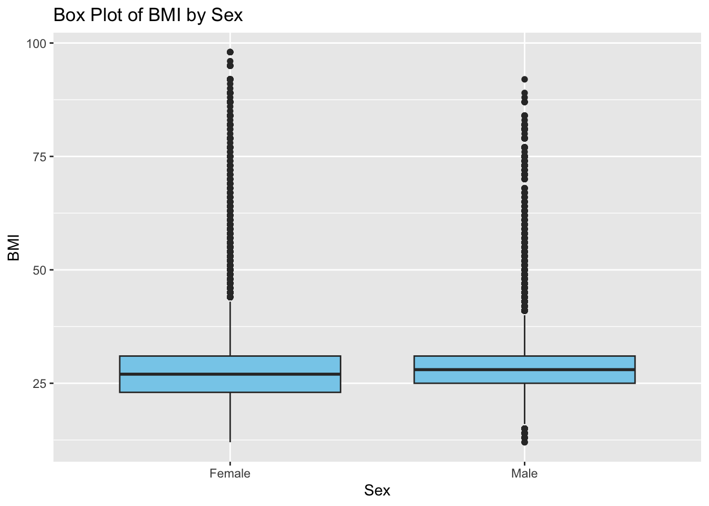

── Attaching core tidyverse packages ──────────────────────── tidyverse 2.0.0 ──
✔ dplyr 1.1.4 ✔ readr 2.1.5
✔ forcats 1.0.0 ✔ stringr 1.5.1
✔ ggplot2 3.5.1 ✔ tibble 3.2.1
✔ lubridate 1.9.3 ✔ tidyr 1.3.1
✔ purrr 1.0.2
── Conflicts ────────────────────────────────────────── tidyverse_conflicts() ──
✖ dplyr::filter() masks stats::filter()
✖ dplyr::lag() masks stats::lag()
ℹ Use the conflicted package (<http://conflicted.r-lib.org/>) to force all conflicts to become errors
library(ggplot2)
The data set used in this project is called the “Diabetes Health Indicators Dataset”. Diabetes is a large problem in America; as of 2018 34.2 million Americans have diabetes and 88 million have prediabetes. The original data set from the Behavioral Risk Factor Surveillance System (BRFSS) contains responses from 441,455 and has 330 features.
This project looks at a few variables in particular:
Smoker: Have you smoked at least 100 cigarettes in your entire life (YES OR NO)
PhysActivity: Physical activity in the last 30 days (YES OR NO)
Education: Education level
Age: Age category of subject
Sex: Male or Female
HeartDiseaseorAttack: Coronary heart disease (CHD) or myocardial infarction (MI) (YES OR NO)
HighBP: No high BP or high BP BMI: BMI of subject
The goal of Exploratory Data Analysis (EDA) is to analyze and investigate data sets to understand and summarize the data before applying them to models. This helps validate results from models and other applications.
EDA Process: Understand how data is stored Data validation Determine rate of missing values Clean data up Investigate distributions Apply transformations
Diabetes_binary HighBP HighChol
No diabetes:218334 No high BP:144851 No high cholesterol:146089
prediabetes: 35346 High BP :108829 High cholesterol :107591
diabetes : 0
CholCheck BMI Smoker Stroke
No chol check in 5 years : 9470 Min. :12.00 No :141257 No :243388
Yes chol check in 5 years:244210 1st Qu.:24.00 Yes:112423 Yes: 10292
Median :27.00
Mean :28.38
3rd Qu.:31.00
Max. :98.00
HeartDiseaseorAttack PhysActivity Fruits Veggies HvyAlcoholConsump
No :229787 No : 61760 No : 92782 No : 47839 No :239424
Yes: 23893 Yes:191920 Yes:160898 Yes:205841 Yes: 14256
AnyHealthcare NoDocbcCost GenHlth MentHlth
No : 12417 No :232326 Excellent:45299 Length:253680
Yes:241263 Yes: 21354 Very good:89084 Class :character
Good :75646 Mode :character
Fair :31570
Poor :12081
PhysHlth DiffWalk Sex Age
Length:253680 No :211005 Female:141974 Age 60 to 64:33244
Class :character Yes: 42675 Male :111706 Age 65 to 69:32194
Mode :character Age 55 to 59:30832
Age 50 to 54:26314
Age 70 to 74:23533
Age 45 to 49:19819
(Other) :87744
Education
Never attended school or only kindergarten : 174
Grades 1 through 8 (Elementary) : 4043
Grades 9 through 11 (Some high school) : 9478
Grade 12 or GED (High school graduate) : 62750
College 1 year to 3 years (Some college or technical school): 69910
College 4 years or more (College graduate) :107325
Refused : 0
Income
$75,000 or more :90385
Less than $75,000 ($50,000 to less than $75,000):43219
Less than $50,000 ($35,000 to less than $50,000):36470
Less than $35,000 ($25,000 to less than $35,000):25883
Less than $25,000 ($20,000 to less than $25,000):20135
Less than $20,000 ($15,000 to less than $20,000):15994
(Other) :21594
No CHS/MI Yes CHS/MI Sum
Not smoked 100 cigarettes 132165 9092 141257
Smoked 100 cigarettes 97622 14801 112423
Sum 229787 23893 253680
table2 <-table(diabetes$Age, diabetes$PhysActivity, diabetes$HighBP)colnames(table2) <-c("No Phys Activity in last 30 days", "Physical activity in last 30 days")table2
, , = No high BP
No Phys Activity in last 30 days
Age 18 to 24 686
Age 25 to 29 1015
Age 30 to 34 1580
Age 35 to 39 2063
Age 40 to 44 2319
Age 45 to 49 2715
Age 50 to 54 3452
Age 55 to 59 3587
Age 60 to 64 3351
Age 65 to 69 2727
Age 70 to 74 1830
Age 75 to 79 1357
Age 80 or older 1833
Physical activity in last 30 days
Age 18 to 24 4522
Age 25 to 29 5702
Age 30 to 34 7907
Age 35 to 39 9191
Age 40 to 44 10097
Age 45 to 49 11369
Age 50 to 54 13403
Age 55 to 59 13996
Age 60 to 64 13375
Age 65 to 69 11215
Age 70 to 74 7126
Age 75 to 79 4191
Age 80 or older 4242
, , = High BP
No Phys Activity in last 30 days
Age 18 to 24 63
Age 25 to 29 170
Age 30 to 34 372
Age 35 to 39 696
Age 40 to 44 1066
Age 45 to 49 1736
Age 50 to 54 2928
Age 55 to 59 4120
Age 60 to 64 5006
Age 65 to 69 5229
Age 70 to 74 4437
Age 75 to 79 3442
Age 80 or older 3980
Physical activity in last 30 days
Age 18 to 24 429
Age 25 to 29 711
Age 30 to 34 1264
Age 35 to 39 1873
Age 40 to 44 2675
Age 45 to 49 3999
Age 50 to 54 6531
Age 55 to 59 9129
Age 60 to 64 11512
Age 65 to 69 13023
Age 70 to 74 10140
Age 75 to 79 6990
Age 80 or older 7308
From the plot below you can see that age 60-64 has the largest amount of people in the data set. The smallest group of ages included in the data set is 18-24, which is interesting.
The boxplot below looks at BMI vs. Sex. Men have a slightly higher median when compared to women. women have a larger distribution of BMI.
boxplot1 <-ggplot(diabetes, aes(x = Sex, y = BMI)) +geom_boxplot(fill ="skyblue") +labs(title="Box Plot of BMI by Sex", x="Sex", y="BMI")boxplot1

From the graph below we can see that there are way more people who have not had heart disease or a heart attack. There is around 25,000 people who have had a heart attack and are included in the data set.
plot2 <-ggplot(diabetes, aes(x=HeartDiseaseorAttack)) +geom_bar(fill ="skyblue") +labs(title="Bar Plot of Heart Disease/Attack", x="Heart Disease or Attack?", y="Count") +theme(axis.text.x =element_text(angle =90, hjust =1))plot2